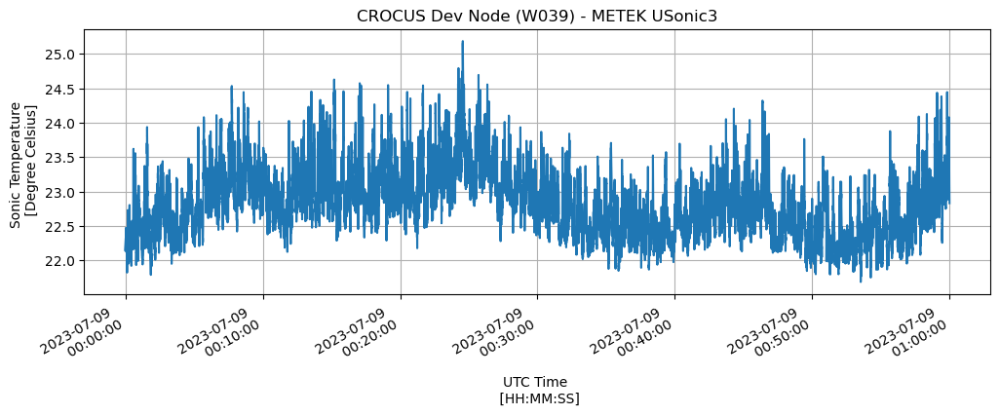

import sage_data_client
import matplotlib.pyplot as plt
import pandas as pd
from matplotlib.dates import DateFormatter
df = sage_data_client.query(start="2023-07-09T00:00:00Z",
end="2023-07-09T01:00:00Z",
filter={
"plugin": "10.31.81.1:5000/local/waggle-sonic3d",
"vsn": "W039",
"sensor": "metek-sonic3D"
}
)
df
| timestamp | name | value | meta.description | meta.host | meta.job | meta.missing | meta.node | meta.plugin | meta.sensor | meta.task | meta.units | meta.vsn | meta.zone | |
|---|---|---|---|---|---|---|---|---|---|---|---|---|---|---|
| 0 | 2023-07-09 00:00:00.025172660+00:00 | sonic3d.temp | 22.149 | Sonic Temperature | 000048b02d15bc8c.ws-nxcore | Pluginctl | -9999.9 | 000048b02d15bc8c | 10.31.81.1:5000/local/waggle-sonic3d | metek-sonic3D | sonictest | degrees Celsius | W039 | core |
| 1 | 2023-07-09 00:00:00.058506456+00:00 | sonic3d.temp | 22.157 | Sonic Temperature | 000048b02d15bc8c.ws-nxcore | Pluginctl | -9999.9 | 000048b02d15bc8c | 10.31.81.1:5000/local/waggle-sonic3d | metek-sonic3D | sonictest | degrees Celsius | W039 | core |
| 2 | 2023-07-09 00:00:00.091937791+00:00 | sonic3d.temp | 22.151 | Sonic Temperature | 000048b02d15bc8c.ws-nxcore | Pluginctl | -9999.9 | 000048b02d15bc8c | 10.31.81.1:5000/local/waggle-sonic3d | metek-sonic3D | sonictest | degrees Celsius | W039 | core |
| 3 | 2023-07-09 00:00:00.126452480+00:00 | sonic3d.temp | 22.151 | Sonic Temperature | 000048b02d15bc8c.ws-nxcore | Pluginctl | -9999.9 | 000048b02d15bc8c | 10.31.81.1:5000/local/waggle-sonic3d | metek-sonic3D | sonictest | degrees Celsius | W039 | core |
| 4 | 2023-07-09 00:00:00.160199343+00:00 | sonic3d.temp | 22.150 | Sonic Temperature | 000048b02d15bc8c.ws-nxcore | Pluginctl | -9999.9 | 000048b02d15bc8c | 10.31.81.1:5000/local/waggle-sonic3d | metek-sonic3D | sonictest | degrees Celsius | W039 | core |
| ... | ... | ... | ... | ... | ... | ... | ... | ... | ... | ... | ... | ... | ... | ... |
| 431973 | 2023-07-09 00:59:59.851615551+00:00 | sonic3d.wwind | 0.002 | Vertical wind | 000048b02d15bc8c.ws-nxcore | Pluginctl | -9999.9 | 000048b02d15bc8c | 10.31.81.1:5000/local/waggle-sonic3d | metek-sonic3D | sonictest | m/s | W039 | core |
| 431974 | 2023-07-09 00:59:59.884990547+00:00 | sonic3d.wwind | 0.002 | Vertical wind | 000048b02d15bc8c.ws-nxcore | Pluginctl | -9999.9 | 000048b02d15bc8c | 10.31.81.1:5000/local/waggle-sonic3d | metek-sonic3D | sonictest | m/s | W039 | core |
| 431975 | 2023-07-09 00:59:59.918300549+00:00 | sonic3d.wwind | 0.009 | Vertical wind | 000048b02d15bc8c.ws-nxcore | Pluginctl | -9999.9 | 000048b02d15bc8c | 10.31.81.1:5000/local/waggle-sonic3d | metek-sonic3D | sonictest | m/s | W039 | core |
| 431976 | 2023-07-09 00:59:59.951650872+00:00 | sonic3d.wwind | 0.001 | Vertical wind | 000048b02d15bc8c.ws-nxcore | Pluginctl | -9999.9 | 000048b02d15bc8c | 10.31.81.1:5000/local/waggle-sonic3d | metek-sonic3D | sonictest | m/s | W039 | core |
| 431977 | 2023-07-09 00:59:59.985170224+00:00 | sonic3d.wwind | -0.006 | Vertical wind | 000048b02d15bc8c.ws-nxcore | Pluginctl | -9999.9 | 000048b02d15bc8c | 10.31.81.1:5000/local/waggle-sonic3d | metek-sonic3D | sonictest | m/s | W039 | core |
431978 rows × 14 columns
df.index
RangeIndex(start=0, stop=431978, step=1)
df.columns
Index(['timestamp', 'name', 'value', 'meta.description', 'meta.host',
'meta.job', 'meta.missing', 'meta.node', 'meta.plugin', 'meta.sensor',
'meta.task', 'meta.units', 'meta.vsn', 'meta.zone'],
dtype='object')
print(set(df['name']))
{'sonic3d.wwind', 'sonic3d.vwind', 'sonic3d.uwind', 'sonic3d.temp'}
df.loc[df['name'] == 'sonic3d.temp']
| timestamp | name | value | meta.description | meta.host | meta.job | meta.missing | meta.node | meta.plugin | meta.sensor | meta.task | meta.units | meta.vsn | meta.zone | |
|---|---|---|---|---|---|---|---|---|---|---|---|---|---|---|
| 0 | 2023-07-09 00:00:00.025172660+00:00 | sonic3d.temp | 22.149 | Sonic Temperature | 000048b02d15bc8c.ws-nxcore | Pluginctl | -9999.9 | 000048b02d15bc8c | 10.31.81.1:5000/local/waggle-sonic3d | metek-sonic3D | sonictest | degrees Celsius | W039 | core |
| 1 | 2023-07-09 00:00:00.058506456+00:00 | sonic3d.temp | 22.157 | Sonic Temperature | 000048b02d15bc8c.ws-nxcore | Pluginctl | -9999.9 | 000048b02d15bc8c | 10.31.81.1:5000/local/waggle-sonic3d | metek-sonic3D | sonictest | degrees Celsius | W039 | core |
| 2 | 2023-07-09 00:00:00.091937791+00:00 | sonic3d.temp | 22.151 | Sonic Temperature | 000048b02d15bc8c.ws-nxcore | Pluginctl | -9999.9 | 000048b02d15bc8c | 10.31.81.1:5000/local/waggle-sonic3d | metek-sonic3D | sonictest | degrees Celsius | W039 | core |
| 3 | 2023-07-09 00:00:00.126452480+00:00 | sonic3d.temp | 22.151 | Sonic Temperature | 000048b02d15bc8c.ws-nxcore | Pluginctl | -9999.9 | 000048b02d15bc8c | 10.31.81.1:5000/local/waggle-sonic3d | metek-sonic3D | sonictest | degrees Celsius | W039 | core |
| 4 | 2023-07-09 00:00:00.160199343+00:00 | sonic3d.temp | 22.150 | Sonic Temperature | 000048b02d15bc8c.ws-nxcore | Pluginctl | -9999.9 | 000048b02d15bc8c | 10.31.81.1:5000/local/waggle-sonic3d | metek-sonic3D | sonictest | degrees Celsius | W039 | core |
| ... | ... | ... | ... | ... | ... | ... | ... | ... | ... | ... | ... | ... | ... | ... |
| 107989 | 2023-07-09 00:59:59.851615551+00:00 | sonic3d.temp | 22.887 | Sonic Temperature | 000048b02d15bc8c.ws-nxcore | Pluginctl | -9999.9 | 000048b02d15bc8c | 10.31.81.1:5000/local/waggle-sonic3d | metek-sonic3D | sonictest | degrees Celsius | W039 | core |
| 107990 | 2023-07-09 00:59:59.884990547+00:00 | sonic3d.temp | 22.872 | Sonic Temperature | 000048b02d15bc8c.ws-nxcore | Pluginctl | -9999.9 | 000048b02d15bc8c | 10.31.81.1:5000/local/waggle-sonic3d | metek-sonic3D | sonictest | degrees Celsius | W039 | core |
| 107991 | 2023-07-09 00:59:59.918300549+00:00 | sonic3d.temp | 22.871 | Sonic Temperature | 000048b02d15bc8c.ws-nxcore | Pluginctl | -9999.9 | 000048b02d15bc8c | 10.31.81.1:5000/local/waggle-sonic3d | metek-sonic3D | sonictest | degrees Celsius | W039 | core |
| 107992 | 2023-07-09 00:59:59.951650872+00:00 | sonic3d.temp | 22.847 | Sonic Temperature | 000048b02d15bc8c.ws-nxcore | Pluginctl | -9999.9 | 000048b02d15bc8c | 10.31.81.1:5000/local/waggle-sonic3d | metek-sonic3D | sonictest | degrees Celsius | W039 | core |
| 107993 | 2023-07-09 00:59:59.985170224+00:00 | sonic3d.temp | 22.830 | Sonic Temperature | 000048b02d15bc8c.ws-nxcore | Pluginctl | -9999.9 | 000048b02d15bc8c | 10.31.81.1:5000/local/waggle-sonic3d | metek-sonic3D | sonictest | degrees Celsius | W039 | core |
107994 rows × 14 columns
fig, axs = plt.subplots(figsize=(12, 4))
# Define Format of how the date is displayed
date_form = DateFormatter("%Y-%m-%d \n %H:%M:%S")
# Note: Use the Pandas DataFrame 'loc' functionality to search the object for the ambient temp
df.loc[df['name'] == 'sonic3d.temp'].set_index('timestamp').value.plot(
xlabel='UTC Time \n [HH:MM:SS]',
ylabel='Sonic Temperature \n [Degree Celsius]',
title='CROCUS Dev Node (W039) - METEK USonic3',
ax=axs
)
axs.xaxis.set_major_formatter(date_form)
axs.grid(True)

fig, axs = plt.subplots(figsize=(15, 5))
# Define Format of how the date is displayed
date_form = DateFormatter("%Y-%m-%d \n %H:%M:%S")
# Note: Use the Pandas DataFrame 'loc' functionality to search the object for the ambient temp
df.loc[df['name'] == 'sonic3d.uwind'].set_index('timestamp').value.plot(
xlabel='UTC Time \n [HH:MM:SS]',
ylabel='Wind Speed \n [meters per second]',
title='CROCUS Dev Node (W039) - METEK USonic3',
ax=axs,
color='b'
)
df.loc[df['name'] == 'sonic3d.vwind'].set_index('timestamp').value.plot(
xlabel='UTC Time \n [HH:MM:SS]',
title='CROCUS Dev Node (W039) - METEK USonic3',
ax=axs,
color='r'
)
df.loc[df['name'] == 'sonic3d.wwind'].set_index('timestamp').value.plot(
xlabel='UTC Time \n [HH:MM:SS]',
title='CROCUS Dev Node (W039) - METEK USonic3',
ax=axs,
color='g'
)
# Set the left hand y-axis label and color to match variable displayed
axs.set_ylabel('Wind Speed \n [meters per second]',
color='k',
)
# Change left hand y-axis tick colors to match variable displayed
axs.tick_params(axis='y', labelcolor='k')
# Note: Use the Pandas DataFrame 'loc' functionality to search the object for the ambient temp
axs.xaxis.set_major_formatter(date_form)
axs.grid(True)
plt.legend(['Uwind', 'Vwind', 'Wwind'])
<matplotlib.legend.Legend at 0x7f4aa822a500>